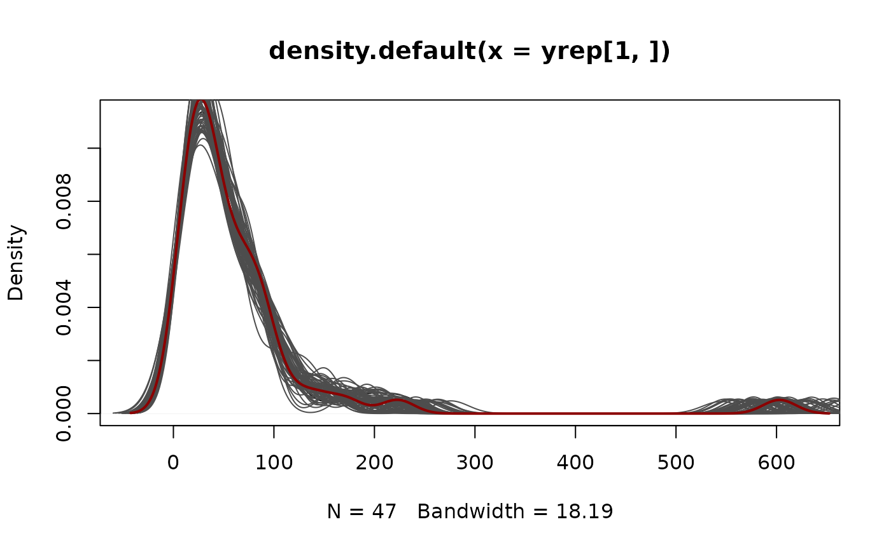
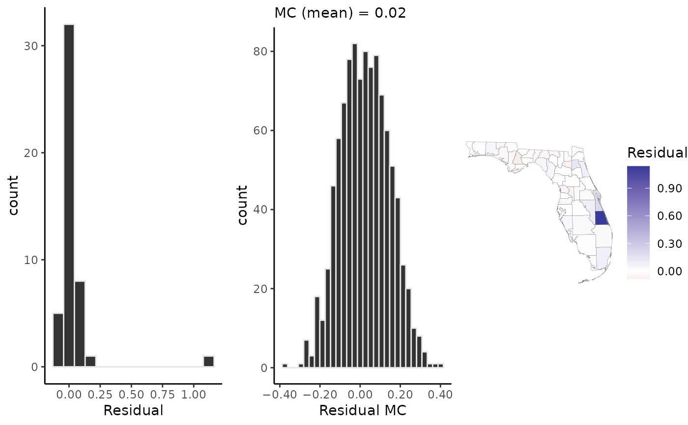

Draw samples from the posterior predictive distribution
Source:R/posterior_predict.R
posterior_predict.RdDraw samples from the posterior predictive distribution of a fitted geostan model. Use the original data or new data, with or without the spatial component and other partial pooling terms.
posterior_predict(object, S, summary = FALSE, width = 0.95, car_parts, seed)
Arguments
| object | A |
|---|---|
| S | Optional; number of samples to take from the posterior distribution. The default, and maximum, is the total number of samples stored in the model. |
| summary | Should the predictive distribution be summarized by its means and central quantile intervals? If |
| width | Only used if |
| car_parts | Data for CAR model specification; only required for |
| seed | A single integer value to be used in a call to |
Value
A matrix of size `S x `N` containing samples from the posterior predictive distribution, where `S` is the number of samples drawn and `N` is the number of observations. If `summary = TRUE`, a `data.frame` with `N` rows and `3` columns is returned (with column names `mu`, `lwr`, and `upr`).
Examples
fit <- stan_glm(sents ~ offset(log(expected_sents)), data = sentencing, family = poisson(), chains = 1)#> #>#>#> location scale #> 0.1111811 3.0000000 #> #> SAMPLING FOR MODEL 'base' NOW (CHAIN 1). #> Chain 1: #> Chain 1: Gradient evaluation took 1.4e-05 seconds #> Chain 1: 1000 transitions using 10 leapfrog steps per transition would take 0.14 seconds. #> Chain 1: Adjust your expectations accordingly! #> Chain 1: #> Chain 1: #> Chain 1: Iteration: 1 / 2000 [ 0%] (Warmup) #> Chain 1: Iteration: 1000 / 2000 [ 50%] (Warmup) #> Chain 1: Iteration: 1001 / 2000 [ 50%] (Sampling) #> Chain 1: Iteration: 2000 / 2000 [100%] (Sampling) #> Chain 1: #> Chain 1: Elapsed Time: 0.030669 seconds (Warm-up) #> Chain 1: 0.030349 seconds (Sampling) #> Chain 1: 0.061018 seconds (Total) #> Chain 1:yrep <- posterior_predict(fit, S = 100) bayesplot::ppc_dens_overlay(y = sentencing$sents, yrep = yrep)fit2 <- stan_glm(sents ~ offset(log(expected_sents)), re = ~ name, data = sentencing, family = poisson(), chains = 1)#> #>#>#> location scale #> 0.1111811 3.0000000#> #>#>#> df location scale #> 20 0 3 #> #> SAMPLING FOR MODEL 'base' NOW (CHAIN 1). #> Chain 1: #> Chain 1: Gradient evaluation took 2e-05 seconds #> Chain 1: 1000 transitions using 10 leapfrog steps per transition would take 0.2 seconds. #> Chain 1: Adjust your expectations accordingly! #> Chain 1: #> Chain 1: #> Chain 1: Iteration: 1 / 2000 [ 0%] (Warmup) #> Chain 1: Iteration: 1000 / 2000 [ 50%] (Warmup) #> Chain 1: Iteration: 1001 / 2000 [ 50%] (Sampling) #> Chain 1: Iteration: 2000 / 2000 [100%] (Sampling) #> Chain 1: #> Chain 1: Elapsed Time: 0.237822 seconds (Warm-up) #> Chain 1: 0.240475 seconds (Sampling) #> Chain 1: 0.478297 seconds (Total) #> Chain 1:yrep <- posterior_predict(fit2, S = 100) bayesplot::ppc_dens_overlay(y = sentencing$sents, yrep = yrep)#>#>